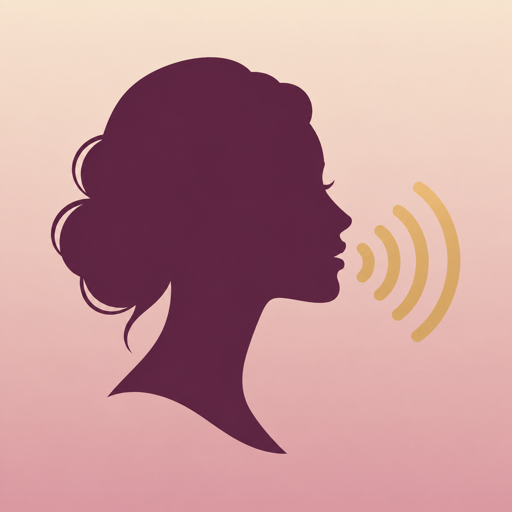

Иконка-заглушка
Три кандидата для первой сборки. В 1.0 (1) стоит B (assets/icon-placeholder-1024.png); окончательный выбор — за основателем, статус: открыто.

Вариант A
сливовый профиль + золотые звуковые дуги, светлый фон · icon-a-profile-wave.png

Вариант B в сборке 1.0 (1)
светлый профиль растворяется в звуковой волне, градиент роза → слива · icon-b-glow.png
Вариант C
два профиля: «сейчас» и «будущая я» · icon-c-mirror.png
Рекомендация
B, потому что точнее всего даёт «голос будущей себя», выглядит премиально и читается в 60 px. A читается лучше всех, но похож на голосового ассистента; C самый точный по смыслу, но мелкий в 60 px. Ни один не похож на текстовые иконки I am, Stella, Aya и на сливовое «her» у HerSelfConcept
Маленькие копии — 60, 40 и 29 px: так иконка выглядит в выдаче App Store, на домашнем экране и в настройках. Источник: assets/icon-candidates/, вопрос в APPROVALS.md — пересобирается при каждой сборке сайта.